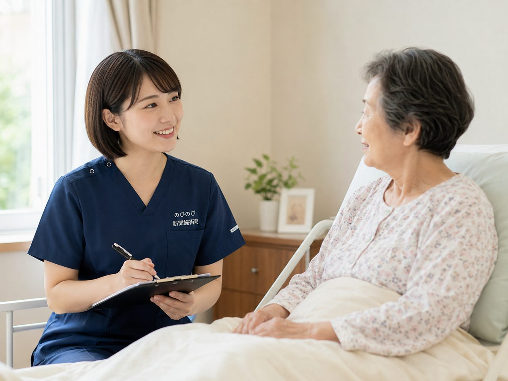

交通事故や転倒でむち打ち（頸椎捻挫）を負ったあと、首や肩の痛み、頭の重さ、腕のだるさが何か月も、ときに何年も抜けきらない。そんなつらさを抱える方が多くおられます。急な治療がひと段落しても慢性の不調として残る状態を、頸椎捻挫後遺症と呼びます。ここでは、まず医療機関を受診すべき目安、鍼灸でできること・できないこと、医療保険を使った自宅での受け方と費用を、順を追って説明します。
まず大事なところから。頸椎捻挫後遺症は、はり・きゅうの療養費で認められた6つの病名の一つです。医師が治療の必要を認めた慢性の症状なら、医療保険を使って自宅で施術を受けられます。自己負担は1割の方でおよそ395円（1回の総額3,950円）。ただし事故直後や急な強い痛み・しびれ・脱力・激しい頭痛やめまいは、まず整形外科など医療機関へ。鍼灸はあくまで慢性期の後遺症を和らげる補助のケアです。効果には個人差があります。
事故のあとしばらくして、じわじわ出てくる首肩のつらさ
むち打ち、つまり頸椎捻挫は、追突や転倒で首が前後に大きく振られ、首まわりの筋肉や靭帯を痛めた状態です。ぶつけた直後より、二、三日たってから首が回しにくくなったり、肩から後頭部にかけて重くなってきた、という方がよくいらっしゃいます。多くはそのまま落ち着いていきますが、痛めた部分の緊張と血のめぐりの悪さが居すわると、痛みやこり、頭の重さが数ヶ月単位で続くことがあります。これが頸椎捻挫後遺症です。
この症状の厄介なところは、レントゲンやMRIで「骨に異常はありません」と言われても、本人のつらさは消えない点にあります。天気が崩れる前になると首肩が重だるくなる、雨の日は頭痛やめまいが出やすい、という波を感じる方もいます。とくに年配の方は、もともと首の骨や筋肉に加齢による変化を抱えていることが多く、そこへむち打ちが重なるぶん、若い人より回復に時間がかかりがちです。痛いところをかばって首を動かさずにいると、今度は肩や背中まで固まってきて、事故とは別のつらさが上乗せされることもあります。
この症状があるときは、施術より先に病院へ
先にお伝えしておきたいことがあります。次のような場合は、はり・きゅうよりも、医療機関の受診を優先してください。強い頭痛やめまい、吐き気があるとき。手や指のしびれ、力の入りにくさが急に出た、あるいはだんだん強くなっているとき。物が二重に見える、ろれつが回りにくいなど、首とは別の症状が出ているとき。事故の直後で、まだ医師の診察を受けていないとき。
こうしたサインは、首の神経やほかの部分にトラブルが隠れていることがあり、様子を見てはいけない種類のものです。後遺症のケアは、そこが落ち着いてからでも遅くありません。判断に迷うようなら、無理をせず、まず相談してください。受診が先か、施術が向くのかも含めてお答えします。
頸椎捻挫後遺症は、医師が認めれば保険で受けられます
あまり知られていませんが、頸椎捻挫後遺症は、はり・きゅうの療養費（医療保険）が使える対象疾患のひとつです。ほかに神経痛、リウマチ、五十肩、腰痛症、頸肩腕症候群があり、これらと並んで制度上はっきり位置づけられています。ですから、医師が「鍼やお灸による治療が必要」と認め、同意書を書いてくれれば、時間がたって残った首肩の痛みを保険でケアしていけます。
要介護の認定は要りません。必要なのは医師の同意書です。介護保険の限度額とも別の枠なので、デイサービスや訪問介護を使っている方でも、そちらの枠を減らさずに受けられます。事故直後の治療は自賠責や労災が関わることもありますが、のびのびがうかがうのは、あくまで慢性的に残った不調への在宅ケアです。今の自分がどの制度に当てはまるか分からない、という段階でも構いません。状況を伺ってご案内します。対象の考え方は訪問鍼灸マッサージはどんな人が利用できる？にもまとめています。
どこをみて、何をするのか
痛むのは首でも、固まっているのは首だけではありません。のびのびでは、首はもちろん、肩甲骨まわりや背中、後頭部にかけての緊張やめぐりを確かめたうえで、はり・きゅうを中心にほぐしていきます。国家資格を持った施術者がうかがい、その日の首の向きや張り具合を見ながら、刺激の強さを合わせます。
あわせて、首や肩がこれ以上固まらないよう、動かす範囲を保つ手技のケアも加えます。この機能訓練は鍼灸に加えて行うもので、追加の費用はいただきません。長く残った症状が一度で大きく変わることは、正直まれです。効果の出方には個人差があり、必ず良くなると約束できるものでもありません。それでも、つらさをやわらげ、動かしやすさを保つお手伝いはできます。
通院がつらいなら、自宅で受ける形に
首が痛いと、車やバスの揺れがそのまま響きますし、待合室で長く座って順番を待つだけでもこたえます。がまんして通い続けるより、自宅で横になって受けられるほうが、体には楽なことが多いものです。訪問というと寝たきりの方向けと思われがちですが、そうではありません。「痛くて外出がおっくうになってきた」くらいの段階から使えます。出張費はかからず、うかがう費用は施術料に含まれています。
進め方は症状しだいですが、はじめは週に1〜2回ほどから様子を見ることが多いです。体の反応を確かめながら、間隔や内容を無理のないペースに整えていきます。料金は1回の施術で総額3,950円、医療保険の1割負担なら1回およそ395円が目安です。週2回のペースで受ければ、1割負担で月におよそ3,160円になります。焦らず続けられるように組み立てますので、費用の心配も含めて、遠慮なく聞いてください。
家族が先に気づけること、自宅での過ごし方
ご本人は「たいしたことない」と言いがちです。でも、そばで見ていると、首を動かさなくなった、洗濯物を干すのがつらそう、上を向く動作をそっと避けている、といった変化に先に気づけることがあります。事故や転倒のあと、こうした様子が続いているようなら、一度声をかけてみてください。早めに手を打つほど、こじれずにすみます。
ふだんの過ごし方も、ちょっとした工夫で変わります。首や肩を冷やさない。枕の高さを体に合わせる。同じ姿勢を長く続けたら、少しだけ動かす。痛みを我慢して無理に動かす必要はありません。施術のときに、その方の状態に合った過ごし方も一緒にお伝えします。「事故のことはもう終わったから、今さら」と遠慮される方もいますが、時間がたっていても、残ったつらさをケアする道はあります。まずは今の状態を、気軽に聞かせてください。
よくある質問
事故から何年も経っていますが、今からでも受けられますか？
慢性的に続いている症状であれば、対象になり得ます。医師が治療の必要を認めた頸椎捻挫後遺症で、同意書がそろっていれば医療保険で受けられます。経過が長い方も、気になることがあればご連絡ください。
急にしびれが強くなったり、頭痛がひどいときはどうすればよいですか？
まず医療機関を受診してください。しびれの急な悪化や、強い頭痛・吐き気・めまいをともなうときは、診察が先です。訪問鍼灸マッサージは、医師が必要と認めた慢性の症状に向き合う補助のケアです。
むち打ちで首を動かすと痛みます。それでも受けられますか？
無理に動かすことはせず、首肩まわりのこわばりを和らげることから始めます。痛みの強い時期や急な悪化があるときは、施術より先に医師の診察をおすすめします。慢性の症状として落ち着いていれば、体調に合わせて進めます。
交通事故のあとでも、医療保険で受けられますか？
急性期は自賠責保険や医療機関での対応が主で、鍼灸は主役ではありません。治療がひと区切りつき、慢性の後遺症が残った時期に、医師の同意があれば医療保険での施術に切り替えられます。状況をお聞かせください。
費用は1回いくらですか？介護保険の枠は減りませんか？
1回の総額は3,950円、自己負担は1割の方でおよそ395円です。この費用は医療保険で計算するもので、介護保険の区分支給限度額とは別枠のため、介護サービスの利用枠は減りません。
訪問してもらうと、別に交通費や出張費がかかりますか？
別途の出張費（出張料・交通費）はかからず、エリア内はどこでも同額です。お支払いは月ごとにまとめてお願いしています。内訳はあとからでも確認いただけます。
同意書の手続きが初めてで不安です。手伝ってもらえますか？
同意書をもらう段取りや、かかりつけ医へのお願いのしかたも当院が段取りします。手続きが初めての方も、まずは症状と通院の状況をお聞かせください。対応エリアや受けられる条件もあわせてご案内します。